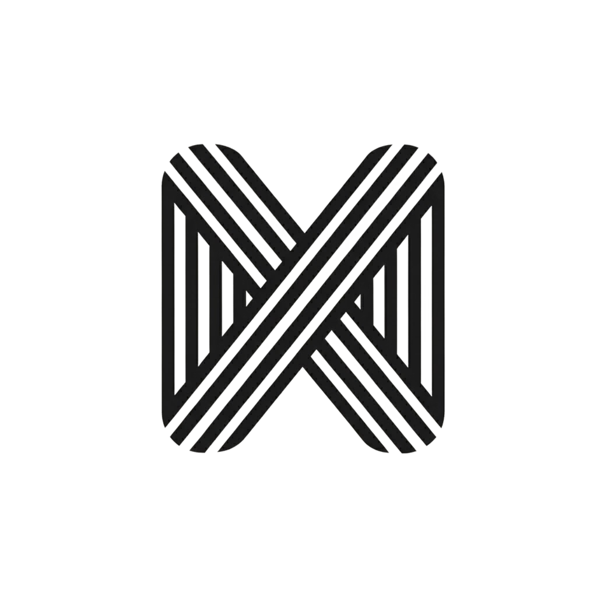

I design strategic processes for organizations navigating their most complex challenges.
Start a conversation →Strategy is a process of structured attention. We name the forces, map the tensions, and design the conversations that let leadership see clearly. The deliverable is never the document. The deliverable is the shared understanding that emerges when the right people work through the right questions in the right order.
The divider uses three parallel horizontal rules with a woven crossing at the golden ratio position. It separates content sections without introducing heavy visual weight. On light ground, the near-black lines at 6% opacity feel like a whisper of structure.
Map the competitive dynamics across your market, identifying positioning gaps and strategic opportunities that align with your organizational strengths.